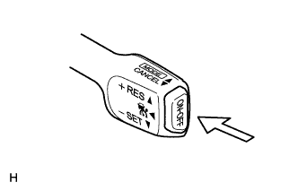
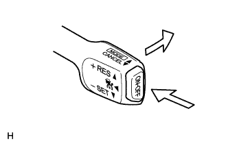
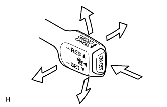
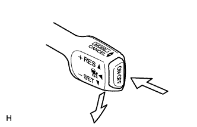
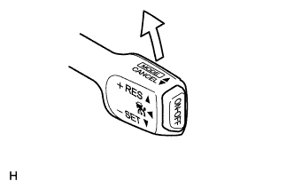
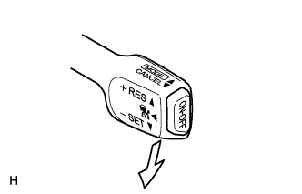
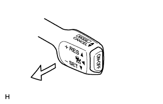
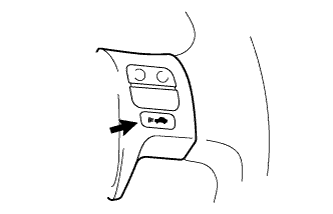

Radar Cruise Control System Function Inspection |
| 1. Inspect Cruise Control Main Switch |
 |
Main Switch Inspection
Turn IG ON.
Check that when the main switch of the cruise control main switch is turned from OFF to ON, the "CRUISE" indicator light in the combination meter assembly comes on and "RADAR READY" is displayed on the multi-information display in the combination meter assembly.
Check that when the main switch of the cruise control main switch is turned from ON to OFF, the "CRUISE" indicator light goes off and "CRUISE OFF" is displayed on the multi-information display in the combination meter assembly.
Check that when the IG is turned OFF with the "CRUISE" indicator light and "RADAR READY" on the multi-information display in the combination meter assembly on, and then the IG is turned ON again, the "CRUISE" indicator light and "RADAR READY" on the multi-information display in the combination meter assembly are off.
 |
Mode Switch Inspection
Turn IG ON.
Turn the main switch of the cruise control main switch ON.
Press and hold the cruise control main switch to the MODE side, and check that after approximately 1 seconds "RADAR READY" on the multi-information display in the combination meter assembly goes off and "Constant Speed" is displayed.
 |
Cruise Control Main Switch Operation Inspection
Check that the switch operates smoothly to the +RES side, -SET side, CANCEL side and MODE side, and returns to its original position when released.
| 2. Cruise Control Driving Inspection (Constant Speed Control Mode) |
 |
Cruise Control Set Inspection
Turn the main switch of the cruise control main switch ON.
Press and hold the cruise control main switch to the MODE side for approximately 1 seconds to select constant speed control mode.
Drive at the desired speed of approximately 50 to 100km/h.
Push the cruise control main switch down to the -SET side.
Check that the vehicle runs at a constant speed at the desired speed when the switch is released.
Check that the set vehicle speed is displayed on the multi-information display in the combination meter assembly.
 |
Acceleration Set Inspection
Set the vehicle to the desired speed in constant speed control mode.
Check that the vehicle continues to accelerate while the cruise control main switch is held up to the +RES side, and that the vehicle cruises at the speed when the switch is released.
Check that the set vehicle speed display on the multi-information display in the combination meter assembly changes when the switch is operated.
Check that the vehicle speed increases by approximately 1.6km/h when the cruise control main switch is pushed up to the +RES side momentarily. (Tap-up function)
 |
Deceleration Set Inspection
Set the vehicle to the desired speed in constant speed control mode.
Check that the vehicle continues to decelerate while the cruise control main switch is held down to the -SET side, and that the vehicle cruises at the speed when the switch is released.
Check that the set vehicle speed display on the multi-information display in the combination meter assembly changes when the switch is operated.
Check that the vehicle speed decreases by approximately 1.6km/h when the cruise control main switch is pushed down to the -SET side momentarily. (Tap-down function)
Cruise Control Cancel Inspection
In constant speed control mode, after setting cruise control, check that when the brake pedal is depressed, the display on the multi-information display in the combination meter assembly goes blank and the vehicle returns to normal driving.
In constant speed control mode, after setting cruise control, check that when the shift lever is moved to the D position or to 3, 2 or 1 of the S position, the display on the multi-information display in the combination meter assembly goes blank and the vehicle returns to normal driving.
In constant speed control mode, after setting cruise control, check that when the main switch of the cruise control main switch is turned OFF, the display on the multi-information display in the combination meter assembly changes to "CRUISE OFF" and the vehicle returns to normal driving.
 |
In constant speed control mode, after setting cruise control, check that when the cruise control main switch is pulled to the CANCEL side, the display on the multi-information display in the combination meter assembly goes blank and the vehicle returns to normal driving.
Resume to Set Speed Before Cancellation Inspection
In constant speed control mode, set cruise control, then depress the brake pedal to cancel cruise control. Check that when the cruise control main switch is pushed up to the +RES side with the vehicle speed at approximately 40km/h or more, the vehicle returns to the vehicle speed before cancellation and the set vehicle speed is displayed on the multi-information display in the combination meter assembly.
In constant speed control mode, set cruise control, then move the shift lever to the D position or to 3, 2 or 1 of the S position to cancel cruise control. Check that when the shift lever is moved to the D position or to 6, 5 or 4 of the S position and the cruise control main switch is pushed up to the +RES side with the vehicle speed at approximately 40km/h or more, the vehicle returns to the vehicle speed before cancellation and the set vehicle speed is displayed on the multi-information display in the combination meter assembly.
In constant speed control mode, set cruise control, then pull the cruise control main switch to the CANCEL side to cancel cruise control. Check that when the cruise control main switch is pushed up to the +RES side with the vehicle speed at approximately 40km/h or more, the vehicle returns to the vehicle speed before cancellation and the set vehicle speed is displayed on the multi-information display in the combination meter assembly.
| 3. Cruise Control Driving Inspection (Vehicle-to-vehicle Distance Control Mode) |
Cruise Control Set Inspection
Turn the main switch of the cruise control main switch ON.
Drive at the desired speed of approximately 50 to 100km/h.
Push the cruise control main switch down to the -SET side.
Check that the vehicle runs at a constant speed at the desired speed when the switch is released.
Check that the set vehicle speed and operating status are displayed on the multi-information display in the combination meter assembly.
Acceleration Set Inspection
Set the vehicle to the desired speed.
Check that the vehicle continues to accelerate in increments of approximately 1km/h while the cruise control main switch is held up to the +RES side, and that the vehicle cruises at the speed when the switch is released.
Check that the set vehicle speed display on the multi-information display in the combination meter assembly changes when the switch is operated.
Deceleration Set Inspection
Set the vehicle to the desired speed.
Check that the vehicle continues to decelerate while the cruise control main switch is held down to the -SET side, and that the vehicle cruises at the speed when the switch is released.
Check that the set vehicle speed display on the multi-information display in the combination meter assembly changes when the switch is operated.
Cruise Control Cancel Inspection
After setting cruise control, check that when the brake pedal is depressed, the display on the multi-information display in the combination meter assembly changes to "RADAR READY" and the vehicle returns to normal driving.
After setting cruise control, check that when the shift lever is moved to the D position or to 3, 2 or 1 of the S position, the display on the multi-information display in the combination meter assembly changes to "RADAR READY" and the vehicle returns to normal driving.
After setting cruise control, check that when the main switch of the cruise control main switch is turned OFF, the display on the multi-information display in the combination meter assembly changes to "CRUISE OFF" and the vehicle returns to normal driving.
After setting cruise control, check that when the cruise control main switch is pulled to the CANCEL side, the display on the multi-information display in the combination meter assembly changes to "RADAR READY" and the vehicle returns to normal driving.
Resume to Set Speed Before Cancellation Inspection
Set cruise control, then depress the brake pedal to cancel cruise control. Check that when the cruise control main switch is pushed up to the +RES side with the vehicle speed at 40km/h or more, the vehicle returns to the vehicle speed before cancellation and the set vehicle speed and operation indication are displayed on the multi-information display in the combination meter assembly.
Set cruise control, then move the shift lever to the D position or to 3, 2 or 1 of the S position to cancel cruise control. Check that when the shift lever is moved to the D position or to 6, 5 or 4 of the S position and the cruise control main switch is pushed up to the +RES side with the vehicle speed at approximately 40km/h or more, the vehicle returns to the vehicle speed before cancellation and the set vehicle speed and operation indication are displayed on the multi-information display in the combination meter assembly.
Set cruise control, then pull the cruise control main switch to the CANCEL side to cancel cruise control. Check that when the cruise control main switch is pushed up to the +RES side with the vehicle speed at approximately 40km/h or more, the vehicle returns to the vehicle speed before cancellation and the set vehicle speed and operation indication are displayed on the multi-information display in the combination meter assembly.
| 4. Steering Pad Switch Assembly (Distance Control Switch) Inspection |
Turn IG ON.
Turn the main switch of the cruise control main switch ON.
 |
Press the distance control switch on the steering pad switch assembly.
Check that the vehicle-to-vehicle distance display on the multi-information display in the combination meter assembly switches in the order (long) → (middle) → (short).